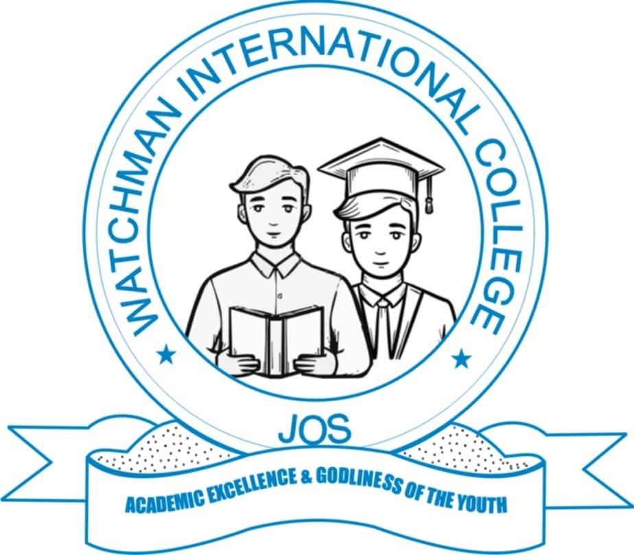
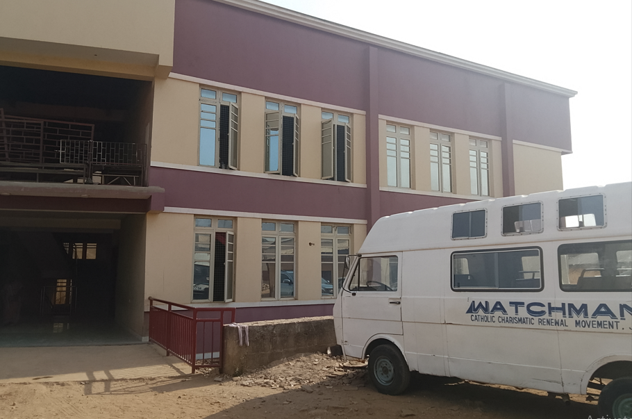
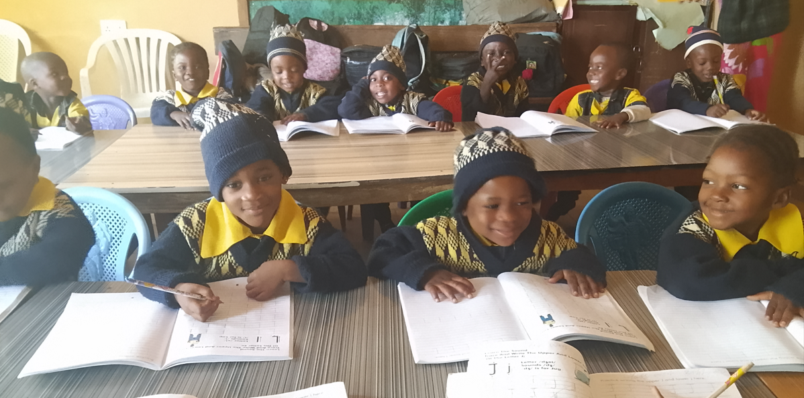
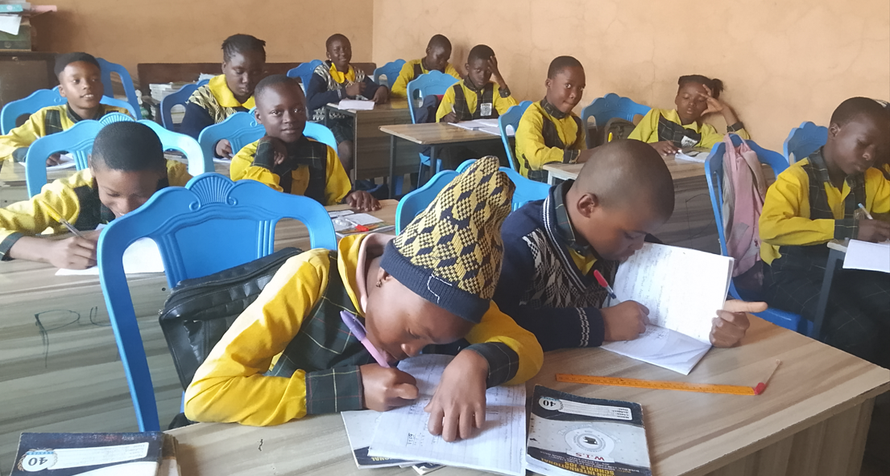
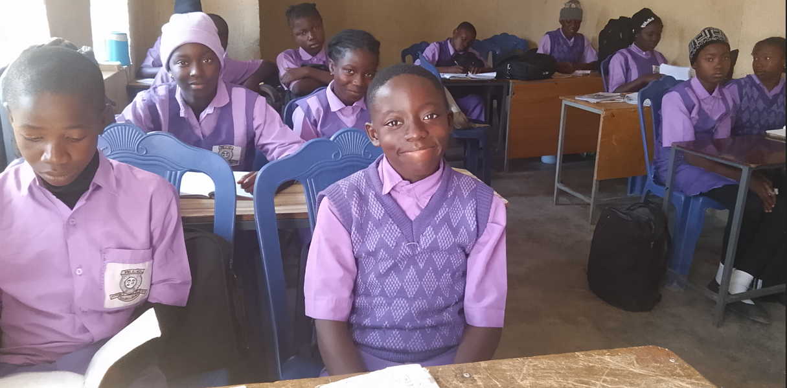
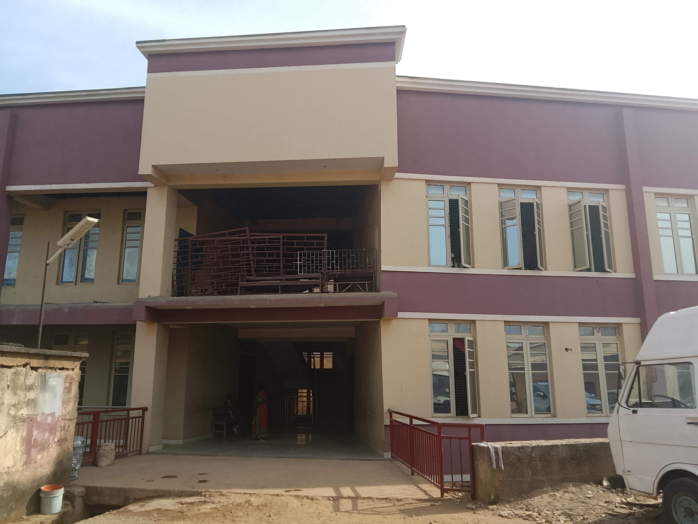

WATCHMAN INTERNATIONAL SCHOOLS
Academic Excellence and Godliness of the Youth

Academic Excellence and Godliness of the Youth

welcome to Watchman International Schools, where we prioritize "Academic Excellence and Godliness of the Youth."
As a group of schools, we are committed to nurturing the academic and spiritual growth of our students. We offer
well-rounded education that balances intellectual achievements with moral and spiritual development. Our passionate
and dedicated teachers inspire students to excel academically while upholding Christian values.We strive to cultivate
responsible, compassionate leaders who embody integrity and faith.
In our safe, supportive environments, every student's unique talents are celebrated. Through a blend of academic programs
academic programs, extracurricular activities, and Christian teachings, we prepare our students to face life's challenges
with confidence and purpose. Our legacy of excellence in education and character formation shapes our students who not only
achieve greatness but also contribute positively to their communities and the world. Welcome to a place where faith and excellence
faith and excellence thrive together.
Our mission is to provide a nuturing Christian environment where students thrive academically and spiritually. We are committed to fostering a community that promotes academic excellence, personal integrity, and godliness. By blending rigorous academic programs with Christian values, we empower students to grow into compassionate, responsible leaders who will make a positive impact in the world. Through faith-based education, we aim to develop students equipped for success in both their academic journey and life beyond school.
We are dedicated to providing quality education at every stage of your child's learning journey. Our services include Creche, Nursery, Primary, and secondary schools, each designed to meet the developmental and academic needs of students while promoting Christian values.

Our creche and nursery schools provide safe, nurturing environment for early childhood development. With a focus on the emotional, social, and intellectual growth of each child, we offer a structured yet flexible program that lays a strong foundation for lifelong learning.

Our Primary school focuses on building strong academic skills in key subjects while instilling Christian values and ethics. Through personalized attention and diverse learning opportunities, we aim to prepare pupils for the challenges of secondary school.

The secondary school offers a comprehensive curriculum for students in Junior Secondary School and Senior Secondary School, combining academic rigor with spiritual guidance. We focus on preparing students for both tertiary education and life, equipping them with the knowledge, skills, and values needed to succeed in the global community.
We value open communication with parents, students, and the community. If you have any questions, inquiries, or would like to learn more about our services, please don't hesitate to get in touch. Our team is ready to assist you and provide the information you need. We look forward to connecting with you!

Watchman International School, Rukuba Road, is situated in a serene and condusive learning environment, this branch ofers a blend of quality education and Christian teachings. We are dedicated to providing students with the tools to thrive academically while nurturing their spiritual and personal growth.
📍 Watchman International School, Rukuba Road, Jos, Plateau State.

Located in the heart of Jos, Watchman International School, Busa Buji is our main campus, offering a comprehensive range of educational services from creche to secondary school. This branch provides a vibrant learning environment, equipped with modern facilities and a focus on academic excellence and Christian values.
📍 Watchman International School, Ba Buji Road, Jos, Plateau State.

Our Tudun Wada branch serves as a dynamic center for secondary education. With a commitment to fostering both intellectual and spiritual growth, this branch offers a nurturing atmosphere where students are encouraged to excel in their academics and develope strong moral foundations.
📍 Watchman International School, Tudun Wada, Jos, Plateau State.
We are always seeking passionate and professional individuals who share our commitment to academic excellence and Christian values. At Watchman International Schools,
you will have the opportunity to inspire, educate, and contribute to the development of our students in a dynamic and supportive environment.
We offer career opportunities across teaching, administration, and support services. If you are dedicated to making a positive impact and helping students
reach their full potential, we invite you to explore our current openings and join our team.